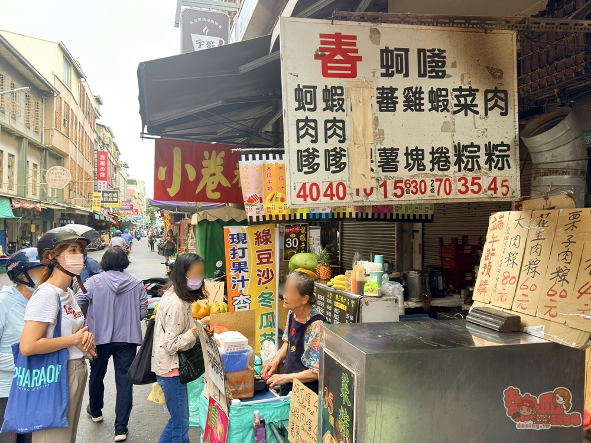
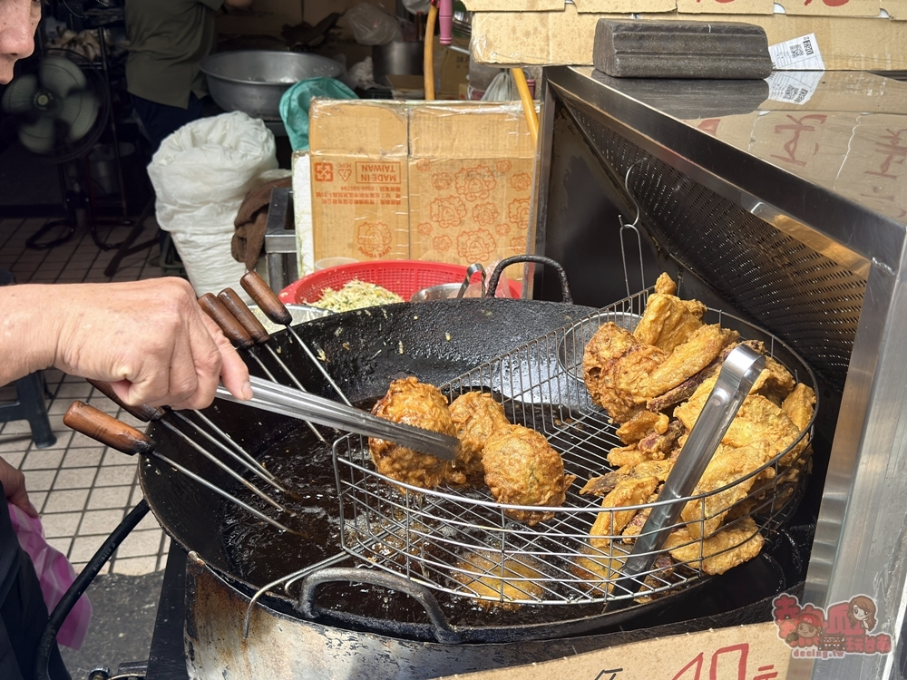
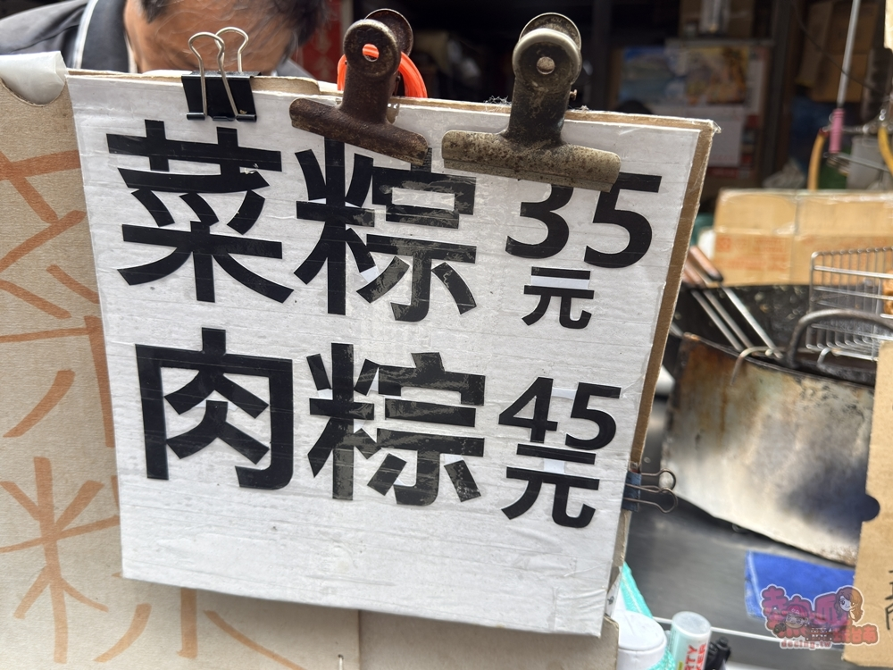
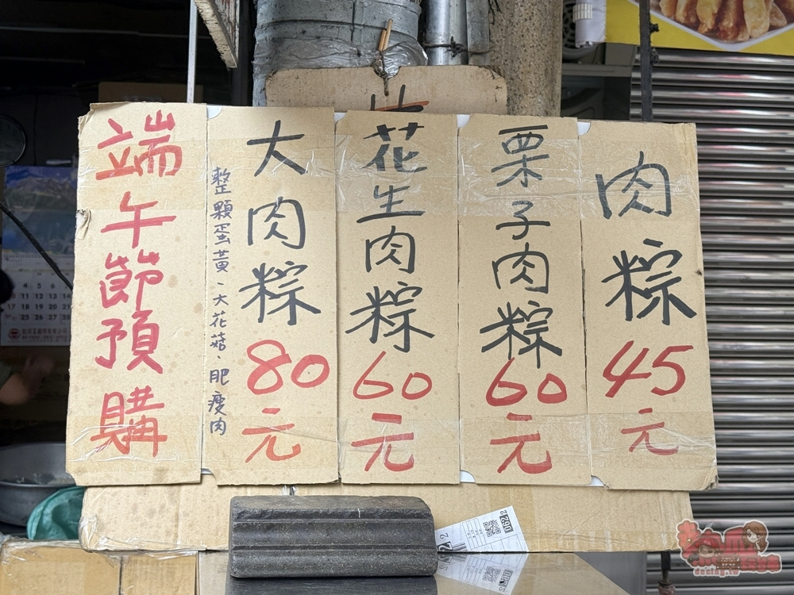
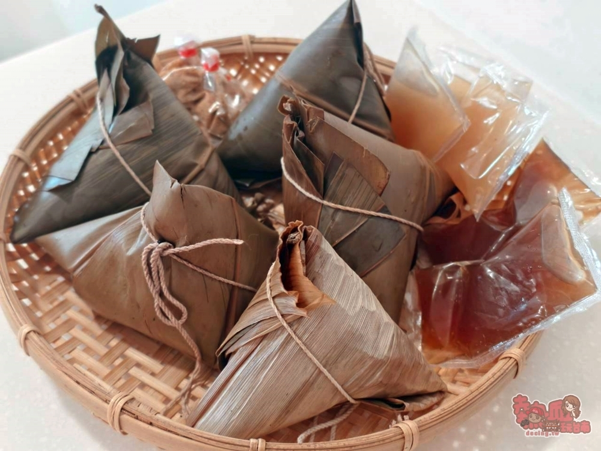
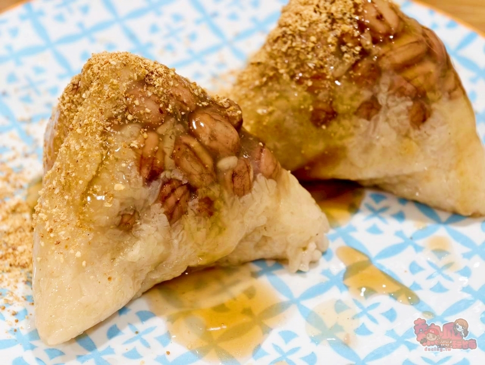
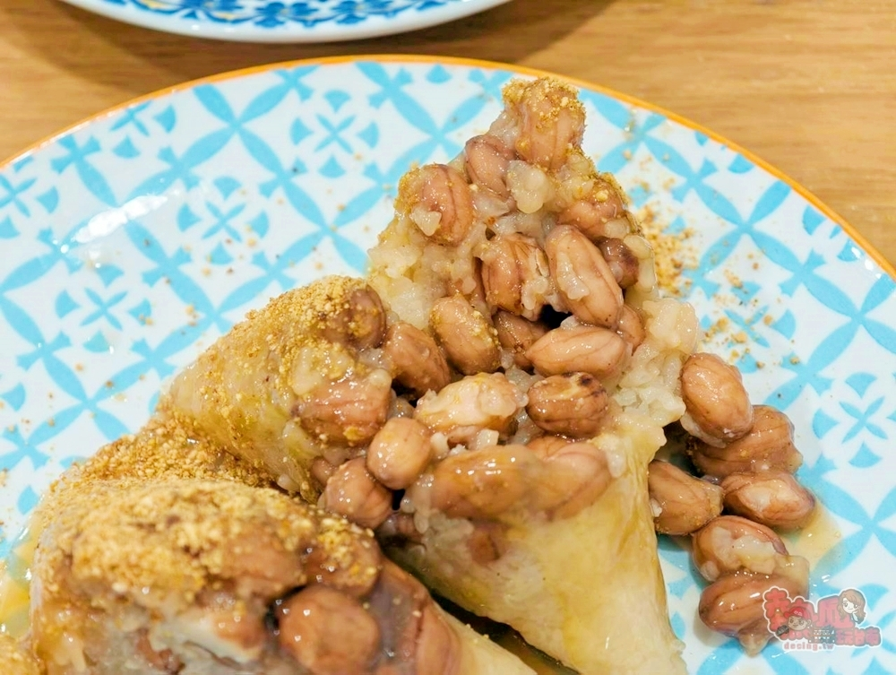
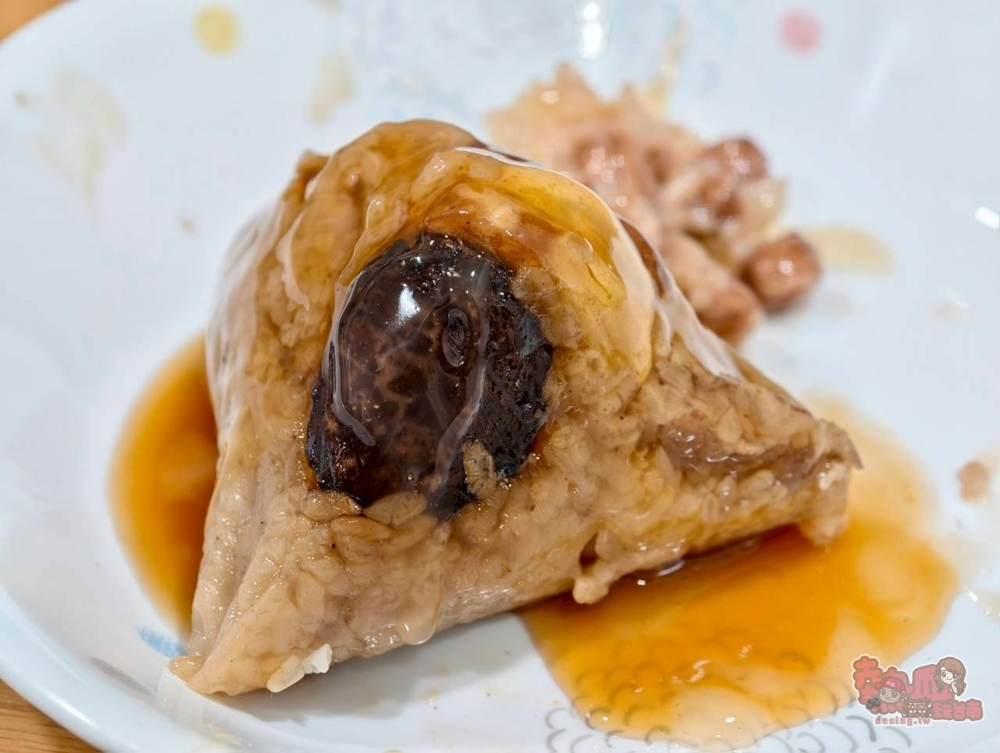
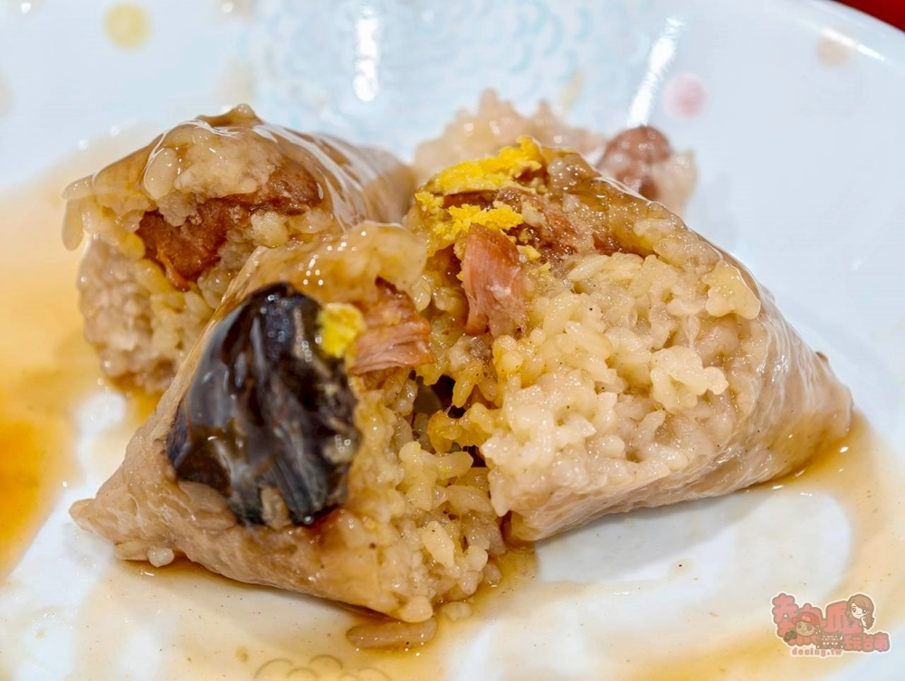

【台南美食】春蚵嗲:國華街超人氣蚵嗲店,隱藏版菜粽只要35元,驚人的爆量花生料,在地人的心頭好

台南國華街美食
說到台南國華街美食相信大家一定耳熟能詳，除了是台南當地人覓食的地方外，更是旅人們的最愛，國華街美食一條街可不是浪得虛名，尤其是水仙宮市場旁，更是走幾步就有台南小吃可以品嚐，想要最接台南地氣，來國華街一定不會錯，這篇就幫大家整理出了國華街美食，讓你開心爽吃還能爽玩台南~
台南國華街美食 春蚵嗲 位置
國華街從一段到三段藏匿了不少美食小吃。這間春蚵嗲地點就在國華街三段、永樂市場外側，與一味品碗粿、阿松割包比鄰。 有別於一般這類炸物小吃都是下午才開賣，春蚵嗲位置有著地利優勢，上午10:30就開賣一路到下午，所以也能輕鬆滿足早上就想吃炸物的客人們。不過除了炸物，粽子也是他們家隱藏版熱門商品，只有內行人會買，好吃又不貴值得推薦。


台南國華街美食 春蚵嗲 菜單MENU
春蚵嗲大部分的人都比較知道炸蚵嗲、炸物，不過其實只是看菜單後面還有菜粽、肉粽兩款。 如果你也是菜粽控，很推薦一定要買來試試看喔~

近期即將到端午節前夕，開始在做粽子預購囉。

春蚵嗲-菜粽
他們家菜粽好吃價格又平實。對於菜粽控的我，都會偶而買一些回家冰箱慢慢吃~

菜粽塊頭不小，切開滿滿花生溢出真得不誇張，花生煮的很軟爛也夠透，吃起來綿密入口即化，菜粽有著緩緩的粽香，經典吃法是淋上醬油膏後，還要一層台南版辣椒醬，撒上花生粉就充滿著澎派感，吃起來超爽！~


春蚵嗲-肉粽
肉粽價格也很實在，心愛a比較偏愛肉粽。 打開粽葉，肉粽的餡料直接一目了然，一片斗大的香菇、蛋黃，切開後的醃豬肉也很大塊，肉不柴口，整體吃起來也很讚，必須說以這樣的份量及價格來說，真的很佛心耶！


春蚵嗲是國華街上的人氣店家，賣著蚵嗲、炸物、粽子並以平價的價格深受一票粉絲喜歡，如果你也和我一樣喜歡吃粽子，這間一定要買來試試喔。
店家資訊
店家名稱：春蚵嗲
地址：臺南市中西區五條港里國華街三段169號
電話：062251006
營業時間：10:30-17:30